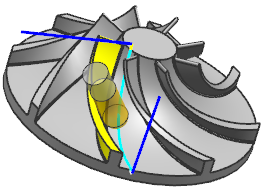

Multi-Blade axis control enhancements
What is it?
The Automatic tool axis option is enhanced to change the lead angle as necessary to avoid collisions.
Enhancements to Multi-Blade axis controls let you do the following:
-
Align the tool automatically to the blade profile with the Swarf Blade option.
-
Explicitly control the lead angle for zig zag motions from the leading edge to the trailing edge, and from the trailing edge to the leading edge.
-
Specify a Minimum Lead Angle value to prevent heal digging.
Swarf Blade
You can use the Swarf Blade tool axis option as a base for any Multi Blade operation. For operations other than Blade Finish, NX uses the Swarf Blade orientation as the initial tool alignment for cuts adjacent to the blades and splitters. The tool axis orientation is not sensitive to UV alignment, and the blade surface can contain multiple UV patches.
To finish cut blades using the side of the tool for swarf cutting or flank milling, set the Number of Cuts option to a positive value of 1 or higher.
-
If Cut Levels = 1, set Tilt Clearance Angle to 0.
-
If Cut Levels > 1, you can add a small Tilt Clearance Angle value to prevent the tool from rubbing against the finished upper levels. For example, 0.2 degrees.
|
 Axis = Swarf Blade, Range Depth = Specify, Number of Cuts = 1 |
Where do I find it?
|
Application |
Manufacturing |
|
Location in dialog box |
[Multi Blade] operation dialog box:
|